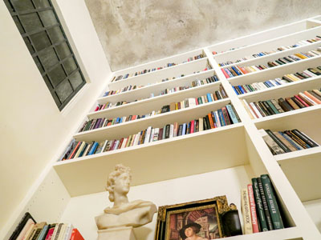
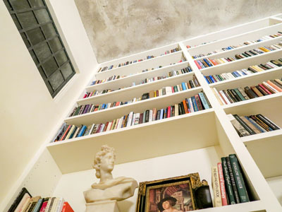
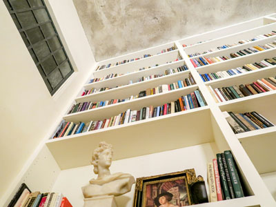

80% JPG - 78k
The quality is very good
 

80% JPG - 78k
The quality is very good
40% JPG - 33k
The quality is medium low
256 GIF - 83K
The quality is medium
64 GIF - 71k
The quality is getting lower
8 GIF - 33k
The quality is very low
24 PNG - 306k
The quality is really good
